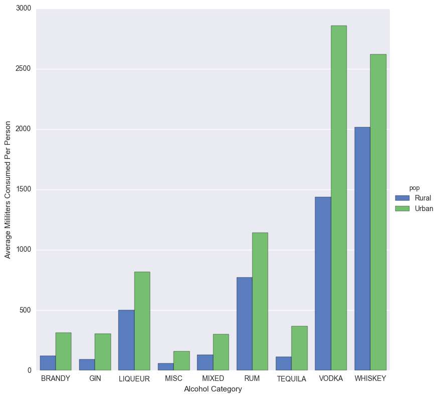
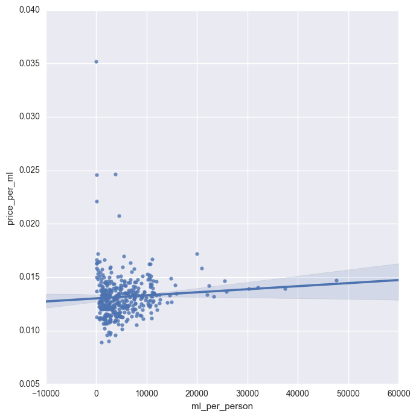
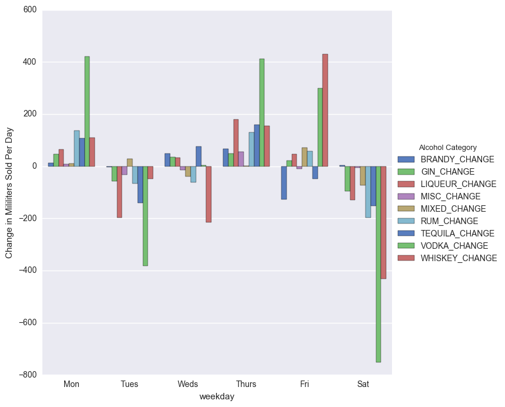
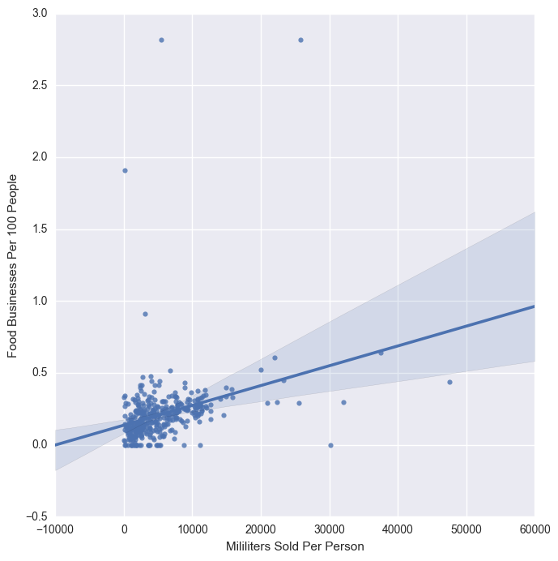
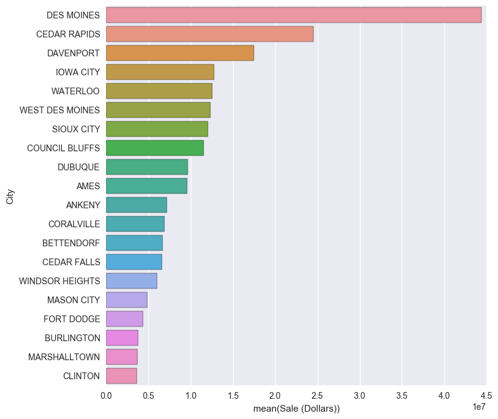
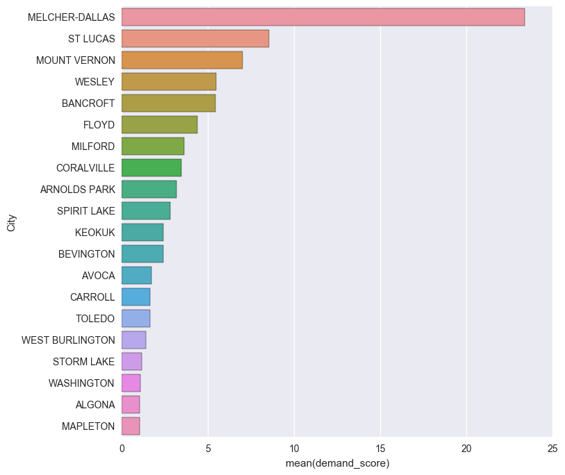
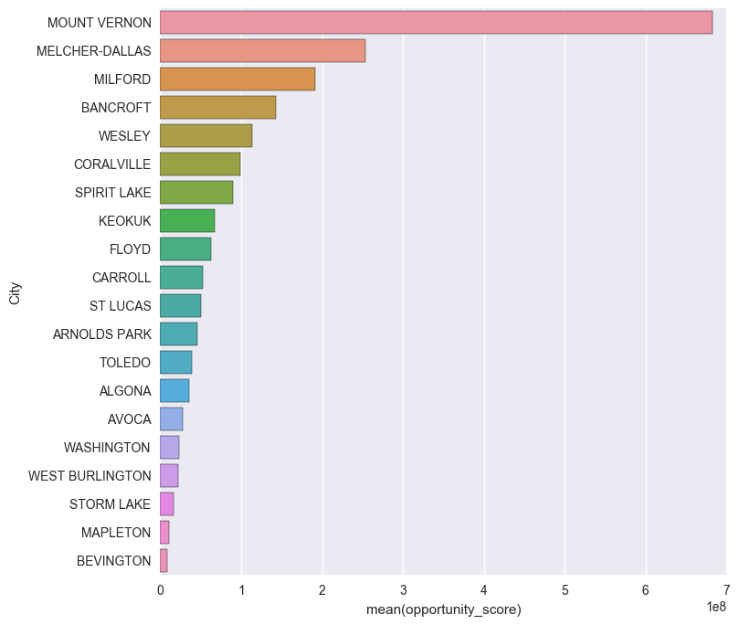
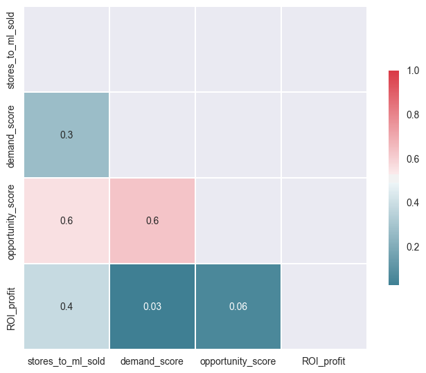
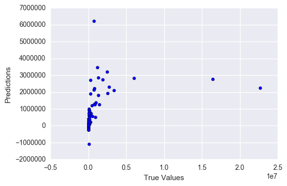

Analyzing Iowa Liquor Sales Project
Scenario 2: Market research for new store locations
A liquor store owner in Iowa is looking to expand to new locations and has hired you to investigate the market data for potential new locations. The business owner is interested in the details of the best model you can fit to the data so that his team can evaluate potential locations for a new storefront.
Goal for Scenario #2: Your task is to:
- Build models of total sales based on location, price per bottle, total bottles sold. You may find it useful to build models for each county, zip code, or city.
- Provide a table of the best performing stores by location type of your choice (city, county, or zip code) and the predictions of your model(s).
- Based on your models and the table of data, recommend some general locations to the business owner, taking into account model performance. Validate your model's performance and ability to predict future sales using cross-validation.
1. Define Success
Definition of "BEST LOCATION":
The best location would consider all of the following 1. The most demand. 2. The strongest demand. 3. The most opportunity.
2. Data Wrangling: Import Data
import pandas as pd
import numpy as np
## Load the data into a DataFrame
data = pd.read_csv('../../../../../project2_data/Iowa_Liquor_Sales_reduced.csv')
df = pd.DataFrame(data)
/Users/nathanhall/anaconda/lib/python2.7/site-packages/IPython/core/interactiveshell.py:2717: DtypeWarning: Columns (3) have mixed types. Specify dtype option on import or set low_memory=False.
interactivity=interactivity, compiler=compiler, result=result)
#See what the data looks like
df.head()
| Date | Store Number | City | Zip Code | County Number | County | Category | Category Name | Vendor Number | Item Number | Item Description | Bottle Volume (ml) | State Bottle Cost | State Bottle Retail | Bottles Sold | Sale (Dollars) | Volume Sold (Liters) | Volume Sold (Gallons) | |
|---|---|---|---|---|---|---|---|---|---|---|---|---|---|---|---|---|---|---|
| 0 | 03/31/2016 | 5029 | DAVENPORT | 52806 | 82.0 | Scott | 1022100.0 | TEQUILA | 370 | 87152 | Avion Silver | 375 | $9.99 | $14.99 | 12 | $179.88 | 4.5 | 1.19 |
| 1 | 03/31/2016 | 5029 | DAVENPORT | 52806 | 82.0 | Scott | 1022100.0 | TEQUILA | 395 | 89197 | Jose Cuervo Especial Reposado Tequila | 1000 | $12.50 | $18.75 | 2 | $37.50 | 2.0 | 0.53 |
| 2 | 03/31/2016 | 4959 | CEDAR FALLS | 50613 | 7.0 | Black Hawk | 1071100.0 | AMERICAN COCKTAILS | 380 | 63959 | Uv Blue Raspberry Lemonade Pet | 1750 | $5.97 | $8.96 | 6 | $53.76 | 10.5 | 2.77 |
| 3 | 03/31/2016 | 2190 | DES MOINES | 50314 | 77.0 | Polk | 1031200.0 | VODKA FLAVORED | 205 | 40597 | New Amsterdam Red Berry | 200 | $2.24 | $3.36 | 48 | $161.28 | 9.6 | 2.54 |
| 4 | 03/31/2016 | 5240 | WEST BRANCH | 52358 | NaN | NaN | 1081200.0 | CREAM LIQUEURS | 305 | 73055 | Rumchata | 750 | $12.50 | $18.75 | 6 | $112.50 | 4.5 | 1.19 |
#Size and shape of data set.
df.shape
(2709552, 18)
#Check data types.
df.dtypes
#We have several object columns which can store multiple types of values in them. We'll need to keep an eye on these
#for the multiple data-type warning received with importing the csv file.
Date object
Store Number int64
City object
Zip Code object
County Number float64
County object
Category float64
Category Name object
Vendor Number int64
Item Number int64
Item Description object
Bottle Volume (ml) int64
State Bottle Cost object
State Bottle Retail object
Bottles Sold int64
Sale (Dollars) object
Volume Sold (Liters) float64
Volume Sold (Gallons) float64
dtype: object
#Check for missing values.
df.isnull().sum()
Date 0
Store Number 0
City 0
Zip Code 0
County Number 10913
County 10913
Category 779
Category Name 6109
Vendor Number 0
Item Number 0
Item Description 0
Bottle Volume (ml) 0
State Bottle Cost 0
State Bottle Retail 0
Bottles Sold 0
Sale (Dollars) 0
Volume Sold (Liters) 0
Volume Sold (Gallons) 0
dtype: int64
#Check for duplicate rows.
df.drop_duplicates()
df.shape
(2709552, 18)
#We're goign to drop the following columns as they are all redundant with another column.
df.drop(['County Number', 'Volume Sold (Gallons)'], axis=1, inplace=True)
2. Data Wrangling: Resolve Missing Data
"Counties" Column
REFERENCE: Make Dictionary to Fix the Missing Counties
Below is the code used for fixing the data type and testing the mapping function
#Put County and Zip Code into their own dataframe.
df_test = df[['County', 'Zip Code']]
#Convert df_fill to string data type (otherwise this will duplicate dictionary values for the ones that are strings and the ones that are integers)
df_test = df_test.astype(str)
#Check shape to confirm we're ok.
df_test.shape
I had used the below code to make a dictionary off these columns. Then I filled in the dozen remaining missing counties for zip codes by looking them up online. After that I was left with a dictionary by which I could replace the missing values.
#Drop duplicates on the zipcode column.
df_test = df_test.drop_duplicates(['Zip Code'])
#Check shape to confirm we're ok.
df_test.shape
#Turn dataframe into dictionary.
dict_test = df_test.set_index('Zip Code').to_dict()['County']
#Check dictionary to confimr it worked as expected.
dict_test
#The dictionary created in the above step was saved as in a .py file and is being imported here.
from missing_data_dictionaries import zip_counties_map
#We have mixed data types in the zip code column so we'll set those to all be strings.
df['Zip Code'] = df['Zip Code'].astype(str)
#Create a new column that uses the zip code column and zip code dictionary to return a complete county column.
#This is MUCH faster than using "fillna" or "replace" to impute values into a column from a dictionary.
df['County'] = df['Zip Code'].map(zip_counties_map)
#Checking results
#print df.County.value_counts()
#Check for missing values.
df.isnull().sum()
#All the missing values have been correctly mapped and resolved.
Date 0
Store Number 0
City 0
Zip Code 0
County 0
Category 779
Category Name 6109
Vendor Number 0
Item Number 0
Item Description 0
Bottle Volume (ml) 0
State Bottle Cost 0
State Bottle Retail 0
Bottles Sold 0
Sale (Dollars) 0
Volume Sold (Liters) 0
dtype: int64
"Categories Name" Column
#Put Category and item description into a data frame.
df_category_name = df[['Category Name', 'Item Description']]
df_category_name.shape
#Drop duplicates on the Item Description column.
df_category_name = df_category_name.drop_duplicates(['Item Description'])
#Convert the nan's to strings.
df_category_name = df_category_name.astype(str)
#Turn dataframe into dictionary.
dict_category_name = df_category_name.set_index('Item Description').to_dict()['Category Name']
#Split the two dictionaries using dictionary comprehension
#Filtering out the dictionary that has nan's to fix by hand.
dict_nan = {k: v for k, v in dict_category_name.iteritems() if v == 'nan'}
#Retaining the dictionary that has correct values.
dict_category = {k: v for k, v in dict_category_name.iteritems() if v != 'nan'}
#The dictionary with missing values was exported to a .py file, fixed by hand, and is being imported back here.
from missing_data_dictionaries import missing_category_names_map
#Concatenate the two dictionaries to create a complete map to fill in missing values.
dict_category_name_complete = dict(dict_category.items() + missing_category_names_map.items())
#Fill in the missing values using the .map function and check to see that all missing values were resolved.
df['Category Name'] = df['Item Description'].map(dict_category_name_complete)
df.isnull().sum()
Date 0
Store Number 0
City 0
Zip Code 0
County 0
Category 779
Category Name 0
Vendor Number 0
Item Number 0
Item Description 0
Bottle Volume (ml) 0
State Bottle Cost 0
State Bottle Retail 0
Bottles Sold 0
Sale (Dollars) 0
Volume Sold (Liters) 0
dtype: int64
"Zip Code" Column
#Bringing in data that was scraped from iowa.hometownlocator.com to validate the zip code column.
data3 = pd.read_csv('../../../../../project2_data/Iowa_Population_Scraped_Data.csv')
df4 = pd.DataFrame(data3)
df4.drop(['Unnamed: 0'], axis=1, inplace=True)
df4.head()
| Average Family Size | Average Household Size | Diversity Index2 | Family Households | Population Density1 | Population in Families | Population in Group Qrtrs | Population in Households | Total Households | Total Population | Zips | |
|---|---|---|---|---|---|---|---|---|---|---|---|
| 0 | 3.0 | 2.76 | 8.0 | 206.0 | 30.0 | 651.0 | 0.0 | 736.0 | 267.0 | 736.0 | 50001 |
| 1 | 3.0 | 2.28 | 7.0 | 367.0 | 12.0 | 1052.0 | 0.0 | 1325.0 | 581.0 | 1325.0 | 50002 |
| 2 | 3.0 | 2.57 | 11.0 | 2027.0 | 63.0 | 6254.0 | 119.0 | 7465.0 | 2910.0 | 7584.0 | 50003 |
| 3 | 3.0 | 2.46 | 9.0 | 222.0 | 26.0 | 632.0 | 0.0 | 757.0 | 308.0 | 757.0 | 50005 |
| 4 | 3.0 | 2.45 | 10.0 | 501.0 | 14.0 | 1479.0 | 2.0 | 1798.0 | 735.0 | 1800.0 | 50006 |
#Convert Zip Code columns to strings so we're comparing apples to apples.
df['Zip Code'] = df['Zip Code'].astype(str)
df4['Zips'] = df4['Zips'].astype(str)
#Check if the "Zip Code" values in our data set are also in the "Zips" column that was scraped.
#Return a true or false and place the values into a "Zip_Check" column.
df['Zip_Check'] = np.where(df['Zip Code'].isin(df4['Zips']), 'True', 'False')
#Get a value count of the "Zip_Check" column and see where we stand.
df['Zip_Check'].value_counts()
True 2694948
False 14604
Name: Zip_Check, dtype: int64
#Filter out the "False" rows into a new dataframe that we can analyze further.
df_zips = df[df['Zip_Check'] == 'False']
#Now lets see what city zip codes don't match the list we scraped.
df_zips['City'].unique()
array(['DAVENPORT', 'DUNLAP', 'CEDAR RAPIDS', 'BURLINGTON', 'MANCHESTER',
'DES MOINES'], dtype=object)
#Lets check what the given zip codes for these cities are in our original dataframe.
df_zips['Zip Code'].unique()
array(['52084', '712-2', '52303', '56201', '52087', '50300'], dtype=object)
#After looking these cities and zips up online its clear these zip codes are mis-entered. We'll fix them below.
#Fix DAVENPORT zip code
df['Zip Code'] = df['Zip Code'].replace(to_replace='52084', value='52804')
#Fix MANCHESTER zip code
df['Zip Code'] = df['Zip Code'].replace(to_replace='52087', value='52057')
#Fix DUNLAP zip code
df['Zip Code'] = df['Zip Code'].replace(to_replace='712-2', value='51529')
#Fix DES MOINES zip code
df['Zip Code'] = df['Zip Code'].replace(to_replace='50300', value='50301')
#Fix BURLINGTON zip code
df['Zip Code'] = df['Zip Code'].replace(to_replace='56201', value='52601')
#Fix Cedar Rapids zip code
df['Zip Code'] = df['Zip Code'].replace(to_replace='52303', value='52403')
#Run the check again to make sure all the values in our zip codes column are accurate zip codes.
df['Zip_Check2'] = np.where(df['Zip Code'].isin(df4['Zips']), 'True', 'False')
df['Zip_Check2'].value_counts()
True 2709552
Name: Zip_Check2, dtype: int64
"Category" Column
#The code below was used to create a dictionary of category names to category. The category values were then
#replaced with higher level generic names for meaningful data analysis.
#Put Category and Category name into a data frame.
df_cat = df[['Category Name', 'Category']]
#Drop duplicates on the Category Name column.
df_cat = df_cat.drop_duplicates(['Category Name'])
#Convert the nan's to strings.
df_cat = df_cat.astype(str)
#Turn dataframe into dictionary.
dict_cat = df_cat.set_index('Category Name').to_dict()['Category']
#The dictionary was then exported as a .py file and is being imported back into the notebook here.
from missing_data_dictionaries import general_map
#Use the above dictionary map to relabel the "Category" column based on the values in the "Category Name" column
#Then check for missing values.
df['Category'] = df['Category Name'].map(general_map)
df.isnull().sum()
Date 0
Store Number 0
City 0
Zip Code 0
County 0
Category 0
Category Name 0
Vendor Number 0
Item Number 0
Item Description 0
Bottle Volume (ml) 0
State Bottle Cost 0
State Bottle Retail 0
Bottles Sold 0
Sale (Dollars) 0
Volume Sold (Liters) 0
Zip_Check 0
Zip_Check2 0
dtype: int64
RESULT: Resolving Missing Values
- Dataframe Shape Before = (2709552, 18)
- Dataframe Shape After = (2709552, 18)
- Missing Values Resolved = 17,801
- Missing Values Unresolved/Dropped = 0
2. Data Wrangling: Extract Data
["Date"] to --> ["year"] ["month"] ["day"] ["weekday"]
#Convert the date column to string so we know what to expect with each step below.
df['Date'] = df['Date'].astype(str)
#Create a year column with simple slicing.
df['year'] = df['Date'].str[-4:]
#Create month column with simple slicing.
df['month'] = df['Date'].str[:2]
#Create a day column with a two step slicing.
df['day'] = df['Date'].str[:5]
df['day'] = df['day'].str[-2:]
#import datetime library to get the weekday for the "Date" column.
import datetime as dt
#Run the most annoying code in the world on the "Date" column.
df['Date_Change'] = pd.to_datetime(df['Date'])
#Create a weekday column from the new "Date_Change" column.
df['weekday'] = df['Date_Change'].dt.dayofweek
#Convert the weekdays from numbers to their abbreviations.
days = {0:'Mon',1:'Tues',2:'Weds',3:'Thurs',4:'Fri',5:'Sat',6:'Sun'}
df['weekday'] = df['weekday'].map(days)
["Bottle Volumn (ml)"] ["Bottles Sold"] to --> ["ml_sold"]
#Create a new column called "ml_sold"
df['ml_sold'] = df['Bottle Volume (ml)'] * df['Bottles Sold']
df['ml_sold'] = df['ml_sold'].astype(float)
["Sale (Dollars)] and ["State Bottle Cost"] formatting
#Format the Sale (Dollars) column.
df['Sale (Dollars)'] = df['Sale (Dollars)'].str.replace('$', '')
df['Sale (Dollars)'] = df['Sale (Dollars)'].astype(float)
#Format the State Cost column.
df['State Bottle Cost'] = df['State Bottle Cost'].str.replace('$', '')
df['State Bottle Cost'] = df['State Bottle Cost'].astype(float)
["Sale (Dollars)"] ["ml_sold"] to --> ["price_per_ml"]
#Create a new column called "price_per_ml"
df['price_per_ml'] = df['Sale (Dollars)'] / df['ml_sold']
["State Bottle Cost"] ["ml_sold"] to --> ["cost_per_ml"]
#Create a new column called "cost_per_ml"
df['cost_per_ml'] = df['State Bottle Cost'] / df['ml_sold']
["Category"] ["ml_sold"] to --> ["BRANDY"] ["GIN"] ["LIQUEUR"] ["MISC"] ["MIXED"] ["RUM"] ["TEQUILA"] ["VODKA"] ["WHISKEY"]
#Create dummy variables for category so we can compare the different alcohols.
cat_dummy = pd.get_dummies(df['Category'])
df = pd.concat([df, cat_dummy], axis=1)
#Multiply the dummy variables by ml_sold so that we can aggregate a total sold for each category.
df['BRANDY'] = df['BRANDY']*df['ml_sold']
df['GIN'] = df['GIN']*df['ml_sold']
df['LIQUEUR'] = df['LIQUEUR']*df['ml_sold']
df['MISC'] = df['MISC']*df['ml_sold']
df['MIXED'] = df['MIXED']*df['ml_sold']
df['RUM'] = df['RUM']*df['ml_sold']
df['TEQUILA'] = df['TEQUILA']*df['ml_sold']
df['VODKA'] = df['VODKA']*df['ml_sold']
df['WHISKEY'] = df['WHISKEY']*df['ml_sold']
3. Import Outside Data
IMPORTING --> ["Food Service Businesses per Zip Code"]
#Importing population data to accomplish some of these key questions.
biz_data = pd.read_csv('../data/biz_data.csv')
biz = pd.DataFrame(biz_data)
biz['Food Businesses'] = biz['Food Businesses'].astype(str)
biz['Zip Code'] = biz['Zip Code'].astype(int)
biz.head()
#Data taken from US Census NAICS industry data for zip codes
| Zip Code | Food Businesses | |
|---|---|---|
| 0 | 50002 | 5 |
| 1 | 50003 | 12 |
| 2 | 50006 | 1 |
| 3 | 50009 | 41 |
| 4 | 50010 | 120 |
#Convert Zip Code column to integer to merge datasets on.
df['Zip Code'] = df['Zip Code'].astype(int)
#Merge the biz dataframe with the main dataframe.
df = pd.merge(df, biz, how='left', on='Zip Code', copy=False, sort=False)
#Fill any "NaN" with 0's as that zip code doesn't have any food businesses registered.
df['Food Businesses'] = df['Food Businesses'].fillna(0)
#Convert datatype back to int
df['Food Businesses'] = df['Food Businesses'].astype(int)
IMPORTING --> ["Total Housing Units"] ["Median Home Value"] ["Average Home Value"] ["Median Household Income"] ["Average Household Income"] ["Per Capita Income"] ["Population Density"] ["Population in Families"] ["Total Population"]
#Bringing in data that was scraped from iowa.hometownlocator.com
data2 = pd.read_csv('../../../../../project2_data/Iowa_Population_Scraped_Data_Second_Table_Fixed.csv')
df3 = pd.DataFrame(data2)
df3.drop(['Unnamed: 0', 'Total Housing Units','Renter Occupied HU_percent', 'Renter Occupied HU', 'Vacant Housing Units', 'Vacant Housing Units _percent'], axis=1, inplace=True)
df3.head()
| Median Home Value | Average Home Value | Median Household Income | Average Household Income | Per Capita Income | Zips | |
|---|---|---|---|---|---|---|
| 0 | 214394.0 | 229626.0 | 69372.0 | 82718.0 | 30008.0 | 50001 |
| 1 | 96875.0 | 124448.0 | 47230.0 | 58575.0 | 25684.0 | 50002 |
| 2 | 187228.0 | 239472.0 | 64408.0 | 84820.0 | 32778.0 | 50003 |
| 3 | 130000.0 | 159231.0 | 54553.0 | 69720.0 | 28367.0 | 50005 |
| 4 | 87207.0 | 113404.0 | 53722.0 | 72983.0 | 29811.0 | 50006 |
#Bringing in data that was scraped from iowa.hometownlocator.com
data3 = pd.read_csv('../../../../../project2_data/Iowa_Population_Scraped_Data.csv')
df4 = pd.DataFrame(data3)
df4.drop(['Unnamed: 0', 'Average Family Size', 'Average Household Size', 'Diversity Index2', 'Population in Group Qrtrs', 'Population in Households', 'Family Households', 'Total Households'], axis=1, inplace=True)
df4.head()
| Population Density1 | Population in Families | Total Population | Zips | |
|---|---|---|---|---|
| 0 | 30.0 | 651.0 | 736.0 | 50001 |
| 1 | 12.0 | 1052.0 | 1325.0 | 50002 |
| 2 | 63.0 | 6254.0 | 7584.0 | 50003 |
| 3 | 26.0 | 632.0 | 757.0 | 50005 |
| 4 | 14.0 | 1479.0 | 1800.0 | 50006 |
#Rename "Zips" column and set to integer so we can merge on it.
df4.rename(columns={'Zips':'Zip Code'}, inplace=True)
df4['Zip Code'] = df4['Zip Code'].astype(int)
#Rename "Zips" column and set to integer so we can merge on it.
df3.rename(columns={'Zips':'Zip Code'}, inplace=True)
df3['Zip Code'] = df3['Zip Code'].astype(int)
#Merge on Zip Code column
df = pd.merge(df, df3, how='left', on='Zip Code', copy=False, sort=False)
#Merge on Zip Code column
df = pd.merge(df, df4, how='left', on='Zip Code', copy=False, sort=False)
df.columns
Index([u'Store Number', u'City', u'Zip Code', u'County', u'Category',
u'Category Name', u'Vendor Number', u'Item Number', u'Item Description',
u'Bottle Volume (ml)', u'State Bottle Cost', u'State Bottle Retail',
u'Bottles Sold', u'Sale (Dollars)', u'Volume Sold (Liters)', u'year',
u'month', u'day', u'weekday', u'Food Businesses', u'Median Home Value',
u'Average Home Value', u'Median Household Income',
u'Average Household Income', u'Per Capita Income',
u'Population Density1', u'Population in Families', u'Total Population'],
dtype='object')
#Dropping columns that won't get used.
df.drop(['Zip_Check', 'Zip_Check2', 'Date', 'Date_Change'], axis=1, inplace=True)
#Creating a new dataframe called "df_clean" that we'll used for EDA.
df_clean = df
df_clean
| Store Number | City | Zip Code | County | Category | Category Name | Vendor Number | Item Number | Item Description | Bottle Volume (ml) | ... | weekday | Food Businesses | Median Home Value | Average Home Value | Median Household Income | Average Household Income | Per Capita Income | Population Density1 | Population in Families | Total Population | |
|---|---|---|---|---|---|---|---|---|---|---|---|---|---|---|---|---|---|---|---|---|---|
| 0 | 5029 | DAVENPORT | 52806 | Scott | TEQUILA | TEQUILA | 370 | 87152 | Avion Silver | 375 | ... | Thurs | 85 | 144979.0 | 159648.0 | 51336.0 | 64201.0 | 26216.0 | 944.0 | 23161.0 | 29531.0 |
| 1 | 5029 | DAVENPORT | 52806 | Scott | TEQUILA | TEQUILA | 395 | 89197 | Jose Cuervo Especial Reposado Tequila | 1000 | ... | Thurs | 85 | 144979.0 | 159648.0 | 51336.0 | 64201.0 | 26216.0 | 944.0 | 23161.0 | 29531.0 |
| 2 | 4959 | CEDAR FALLS | 50613 | Black Hawk | MIXED | AMERICAN COCKTAILS | 380 | 63959 | Uv Blue Raspberry Lemonade Pet | 1750 | ... | Thurs | 110 | 185832.0 | 213143.0 | 54779.0 | 72853.0 | 30239.0 | 332.0 | 26715.0 | 39926.0 |
| 3 | 2190 | DES MOINES | 50314 | Polk | VODKA | VODKA FLAVORED | 205 | 40597 | New Amsterdam Red Berry | 200 | ... | Thurs | 24 | 87153.0 | 104188.0 | 31885.0 | 43863.0 | 15501.0 | 5617.0 | 9831.0 | 14112.0 |
| 4 | 5240 | WEST BRANCH | 52358 | Cedar | LIQUEUR | CREAM LIQUEURS | 305 | 73055 | Rumchata | 750 | ... | Thurs | 9 | 164138.0 | 197958.0 | 62530.0 | 73256.0 | 29832.0 | 46.0 | 3035.0 | 3865.0 |
| 5 | 4988 | CEDAR FALLS | 50613 | Black Hawk | WHISKEY | STRAIGHT BOURBON WHISKIES | 260 | 17090 | Bulleit Bourbon 10YR | 750 | ... | Thurs | 110 | 185832.0 | 213143.0 | 54779.0 | 72853.0 | 30239.0 | 332.0 | 26715.0 | 39926.0 |
| 6 | 3993 | WATERLOO | 50701 | Black Hawk | LIQUEUR | IMPORTED SCHNAPPS | 421 | 69636 | Dr. Mcgillicuddy's Cherry Schnapps | 750 | ... | Thurs | 61 | 145403.0 | 165981.0 | 50060.0 | 65911.0 | 28708.0 | 422.0 | 22760.0 | 30930.0 |
| 7 | 5029 | DAVENPORT | 52806 | Scott | TEQUILA | TEQUILA | 410 | 88294 | Patron Silver Tequila | 375 | ... | Thurs | 85 | 144979.0 | 159648.0 | 51336.0 | 64201.0 | 26216.0 | 944.0 | 23161.0 | 29531.0 |
| 8 | 5144 | ANKENY | 50021 | Polk | BRANDY | AMERICAN GRAPE BRANDIES | 259 | 52318 | Christian Bros Brandy | 1750 | ... | Thurs | 74 | 195948.0 | 211988.0 | 79976.0 | 94705.0 | 37508.0 | 985.0 | 21100.0 | 25657.0 |
| 9 | 5029 | DAVENPORT | 52806 | Scott | BRANDY | IMPORTED GRAPE BRANDIES | 389 | 49185 | Remy Martin Vsop (flask) | 375 | ... | Thurs | 85 | 144979.0 | 159648.0 | 51336.0 | 64201.0 | 26216.0 | 944.0 | 23161.0 | 29531.0 |
| 10 | 5029 | DAVENPORT | 52806 | Scott | TEQUILA | TEQUILA | 410 | 88296 | Patron Tequila Silver | 750 | ... | Thurs | 85 | 144979.0 | 159648.0 | 51336.0 | 64201.0 | 26216.0 | 944.0 | 23161.0 | 29531.0 |
| 11 | 5029 | DAVENPORT | 52806 | Scott | BRANDY | IMPORTED GRAPE BRANDIES | 420 | 48105 | Hennessy VS | 375 | ... | Thurs | 85 | 144979.0 | 159648.0 | 51336.0 | 64201.0 | 26216.0 | 944.0 | 23161.0 | 29531.0 |
| 12 | 5029 | DAVENPORT | 52806 | Scott | BRANDY | IMPORTED GRAPE BRANDIES | 389 | 49186 | Remy Martin Vsop Cognac | 750 | ... | Thurs | 85 | 144979.0 | 159648.0 | 51336.0 | 64201.0 | 26216.0 | 944.0 | 23161.0 | 29531.0 |
| 13 | 5029 | DAVENPORT | 52806 | Scott | WHISKEY | CANADIAN WHISKIES | 260 | 11298 | Crown Royal Canadian Whisky | 1750 | ... | Thurs | 85 | 144979.0 | 159648.0 | 51336.0 | 64201.0 | 26216.0 | 944.0 | 23161.0 | 29531.0 |
| 14 | 5029 | DAVENPORT | 52806 | Scott | RUM | SPICED RUM | 260 | 43337 | Captain Morgan Spiced Rum | 1000 | ... | Thurs | 85 | 144979.0 | 159648.0 | 51336.0 | 64201.0 | 26216.0 | 944.0 | 23161.0 | 29531.0 |
| 15 | 5029 | DAVENPORT | 52806 | Scott | RUM | SPICED RUM | 260 | 43244 | Captain Morgan 100 Proof Spiced Rum | 750 | ... | Thurs | 85 | 144979.0 | 159648.0 | 51336.0 | 64201.0 | 26216.0 | 944.0 | 23161.0 | 29531.0 |
| 16 | 4447 | URBANDALE | 50322 | Polk | VODKA | VODKA 80 PROOF | 300 | 36904 | Mccormick Vodka Pet | 375 | ... | Thurs | 87 | 184512.0 | 196452.0 | 74240.0 | 94575.0 | 39596.0 | 3019.0 | 26021.0 | 33071.0 |
| 17 | 5029 | DAVENPORT | 52806 | Scott | LIQUEUR | MISC. IMPORTED CORDIALS & LIQUEURS | 192 | 65256 | Jagermeister Liqueur | 750 | ... | Thurs | 85 | 144979.0 | 159648.0 | 51336.0 | 64201.0 | 26216.0 | 944.0 | 23161.0 | 29531.0 |
| 18 | 5029 | DAVENPORT | 52806 | Scott | TEQUILA | TEQUILA | 395 | 89196 | Jose Cuervo Especial Reposado Tequila | 750 | ... | Thurs | 85 | 144979.0 | 159648.0 | 51336.0 | 64201.0 | 26216.0 | 944.0 | 23161.0 | 29531.0 |
| 19 | 5029 | DAVENPORT | 52806 | Scott | WHISKEY | STRAIGHT BOURBON WHISKIES | 65 | 19066 | Jim Beam | 750 | ... | Thurs | 85 | 144979.0 | 159648.0 | 51336.0 | 64201.0 | 26216.0 | 944.0 | 23161.0 | 29531.0 |
| 20 | 5029 | DAVENPORT | 52806 | Scott | WHISKEY | CANADIAN WHISKIES | 260 | 10805 | Crown Royal Regal Apple | 375 | ... | Thurs | 85 | 144979.0 | 159648.0 | 51336.0 | 64201.0 | 26216.0 | 944.0 | 23161.0 | 29531.0 |
| 21 | 5029 | DAVENPORT | 52806 | Scott | WHISKEY | BLENDED WHISKIES | 297 | 23826 | Five Star | 750 | ... | Thurs | 85 | 144979.0 | 159648.0 | 51336.0 | 64201.0 | 26216.0 | 944.0 | 23161.0 | 29531.0 |
| 22 | 5029 | DAVENPORT | 52806 | Scott | WHISKEY | CANADIAN WHISKIES | 115 | 11774 | Black Velvet | 375 | ... | Thurs | 85 | 144979.0 | 159648.0 | 51336.0 | 64201.0 | 26216.0 | 944.0 | 23161.0 | 29531.0 |
| 23 | 5034 | MASON CITY | 50401 | Cerro Gordo | WHISKEY | CANADIAN WHISKIES | 55 | 11936 | Canadian Ltd Whisky Convenience Pack | 750 | ... | Thurs | 82 | 121305.0 | 148989.0 | 44670.0 | 60145.0 | 27169.0 | 195.0 | 21502.0 | 29540.0 |
| 24 | 5029 | DAVENPORT | 52806 | Scott | WHISKEY | CANADIAN WHISKIES | 260 | 11297 | Crown Royal Canadian Whisky | 1000 | ... | Thurs | 85 | 144979.0 | 159648.0 | 51336.0 | 64201.0 | 26216.0 | 944.0 | 23161.0 | 29531.0 |
| 25 | 5029 | DAVENPORT | 52806 | Scott | VODKA | IMPORTED VODKA - MISC | 260 | 64511 | Ciroc Apple | 375 | ... | Thurs | 85 | 144979.0 | 159648.0 | 51336.0 | 64201.0 | 26216.0 | 944.0 | 23161.0 | 29531.0 |
| 26 | 5029 | DAVENPORT | 52806 | Scott | VODKA | VODKA 80 PROOF | 380 | 37346 | Phillips Vodka | 750 | ... | Thurs | 85 | 144979.0 | 159648.0 | 51336.0 | 64201.0 | 26216.0 | 944.0 | 23161.0 | 29531.0 |
| 27 | 5029 | DAVENPORT | 52806 | Scott | BRANDY | PEACH BRANDIES | 115 | 56195 | Paul Masson Peach Grande Amber Brandy | 375 | ... | Thurs | 85 | 144979.0 | 159648.0 | 51336.0 | 64201.0 | 26216.0 | 944.0 | 23161.0 | 29531.0 |
| 28 | 4802 | DES MOINES | 50310 | Polk | WHISKEY | CANADIAN WHISKIES | 115 | 11788 | Black Velvet | 1750 | ... | Thurs | 78 | 144152.0 | 151836.0 | 54430.0 | 67785.0 | 29144.0 | 3926.0 | 23098.0 | 31820.0 |
| 29 | 5029 | DAVENPORT | 52806 | Scott | BRANDY | AMERICAN GRAPE BRANDIES | 205 | 52594 | E & J Vs Brandy | 375 | ... | Thurs | 85 | 144979.0 | 159648.0 | 51336.0 | 64201.0 | 26216.0 | 944.0 | 23161.0 | 29531.0 |
| ... | ... | ... | ... | ... | ... | ... | ... | ... | ... | ... | ... | ... | ... | ... | ... | ... | ... | ... | ... | ... | ... |
| 2709522 | 2527 | DES MOINES | 50315 | Polk | LIQUEUR | PEPPERMINT SCHNAPPS | 322 | 75213 | Kinky Blue | 375 | ... | Mon | 59 | 117251.0 | 131356.0 | 46894.0 | 57460.0 | 22566.0 | 3879.0 | 28913.0 | 38347.0 |
| 2709523 | 3403 | COLUMBUS JUNCTION | 52738 | Louisa | RUM | SPICED RUM | 260 | 43337 | Captain Morgan Spiced Rum | 1000 | ... | Mon | 5 | 118569.0 | 151177.0 | 53253.0 | 63189.0 | 23659.0 | 30.0 | 2958.0 | 3609.0 |
| 2709524 | 4267 | ANITA | 50020 | Cass | LIQUEUR | COFFEE LIQUEURS | 65 | 67556 | Kamora Coffee Liqueur | 750 | ... | Mon | 2 | 86962.0 | 131983.0 | 46092.0 | 58449.0 | 25658.0 | 16.0 | 1109.0 | 1403.0 |
| 2709525 | 4229 | HARLAN | 51537 | Shelby | VODKA | VODKA 80 PROOF | 434 | 36308 | Hawkeye Vodka | 1750 | ... | Mon | 17 | 128089.0 | 164435.0 | 49391.0 | 62325.0 | 26784.0 | 40.0 | 5041.0 | 6475.0 |
| 2709526 | 4794 | BURLINGTON | 52601 | Des Moines | GIN | IMPORTED DRY GINS | 35 | 28236 | Bombay Sapphire Gin | 750 | ... | Mon | 81 | 97672.0 | 130929.0 | 42928.0 | 55654.0 | 24203.0 | 215.0 | 22636.0 | 29893.0 |
| 2709527 | 2560 | MARION | 52302 | Linn | LIQUEUR | CREAM LIQUEURS | 260 | 68022 | Bailey's Salted Caramel | 750 | ... | Mon | 56 | 179547.0 | 215378.0 | 66825.0 | 85049.0 | 33963.0 | 507.0 | 32580.0 | 40249.0 |
| 2709528 | 2558 | MOUNT PLEASANT | 52641 | Henry | LIQUEUR | IMPORTED SCHNAPPS | 421 | 69611 | Dr. Mcgillicuddy's Apple Pie Schnapps | 750 | ... | Mon | 37 | 126127.0 | 162932.0 | 47282.0 | 63247.0 | 25012.0 | 60.0 | 8692.0 | 12166.0 |
| 2709529 | 2573 | MUSCATINE | 52761 | Muscatine | VODKA | VODKA FLAVORED | 380 | 40244 | Prairie Organic Cucumber | 750 | ... | Mon | 73 | 131936.0 | 158914.0 | 51255.0 | 65218.0 | 25484.0 | 181.0 | 25123.0 | 31280.0 |
| 2709530 | 4188 | HOLY CROSS | 52053 | Dubuque | BRANDY | AMERICAN GRAPE BRANDIES | 85 | 52806 | Korbel Brandy | 750 | ... | Mon | 1 | 140534.0 | 192355.0 | 53391.0 | 64017.0 | 23886.0 | 20.0 | 1001.0 | 1131.0 |
| 2709531 | 2599 | CORALVILLE | 52241 | Johnson | MIXED | AMERICAN COCKTAILS | 395 | 58872 | Jose Cuervo Authentic Light Margarita Lime | 1750 | ... | Mon | 104 | 208008.0 | 252146.0 | 58212.0 | 81118.0 | 34195.0 | 1512.0 | 13204.0 | 19909.0 |
| 2709532 | 3952 | BETTENDORF | 52722 | Scott | VODKA | IMPORTED VODKA - MISC | 370 | 34029 | Absolut Citron (lemon Vodka) | 1000 | ... | Mon | 76 | 220240.0 | 259427.0 | 75901.0 | 103441.0 | 42042.0 | 1384.0 | 31521.0 | 38041.0 |
| 2709533 | 3631 | AUDUBON | 50025 | Audubon | VODKA | VODKA 80 PROOF | 260 | 37994 | Smirnoff Vodka 80 Prf | 375 | ... | Mon | 4 | 82997.0 | 119378.0 | 47561.0 | 70060.0 | 30843.0 | 18.0 | 2452.0 | 3094.0 |
| 2709534 | 3773 | CEDAR RAPIDS | 52401 | Linn | TEQUILA | TEQUILA | 410 | 88296 | Patron Tequila Silver | 750 | ... | Mon | 39 | 80690.0 | 98950.0 | 23066.0 | 37809.0 | 18864.0 | 1794.0 | 1081.0 | 2359.0 |
| 2709535 | 2643 | WATERLOO | 50701 | Black Hawk | BRANDY | AMERICAN GRAPE BRANDIES | 259 | 52317 | Christian Bros Brandy-Square | 1000 | ... | Mon | 61 | 145403.0 | 165981.0 | 50060.0 | 65911.0 | 28708.0 | 422.0 | 22760.0 | 30930.0 |
| 2709536 | 2633 | DES MOINES | 50320 | Polk | LIQUEUR | MISC. IMPORTED CORDIALS & LIQUEURS | 260 | 66636 | Romana Sambuca Italian Liquore | 750 | ... | Mon | 29 | 165019.0 | 177346.0 | 57010.0 | 71409.0 | 26095.0 | 1150.0 | 18038.0 | 22180.0 |
| 2709537 | 2648 | WEST DES MOINES | 50265 | Polk | WHISKEY | SINGLE BARREL BOURBON WHISKIES | 65 | 19235 | Knob Creek Single Barrel Reserve | 750 | ... | Mon | 78 | 195826.0 | 237351.0 | 70458.0 | 90579.0 | 37942.0 | 1852.0 | 25769.0 | 34256.0 |
| 2709538 | 2506 | BURLINGTON | 52601 | Des Moines | WHISKEY | CANADIAN WHISKIES | 65 | 10628 | Canadian Club Whisky | 1750 | ... | Mon | 81 | 97672.0 | 130929.0 | 42928.0 | 55654.0 | 24203.0 | 215.0 | 22636.0 | 29893.0 |
| 2709539 | 4164 | BETTENDORF | 52722 | Scott | WHISKEY | TENNESSEE WHISKIES | 85 | 86668 | Jack Daniel's Tennessee Honey Mini | 500 | ... | Mon | 76 | 220240.0 | 259427.0 | 75901.0 | 103441.0 | 42042.0 | 1384.0 | 31521.0 | 38041.0 |
| 2709540 | 4972 | MONONA | 52159 | Clayton | VODKA | VODKA FLAVORED | 380 | 40625 | UV Chocolate Cake | 750 | ... | Mon | 4 | 118807.0 | 146975.0 | 50226.0 | 61501.0 | 26205.0 | 33.0 | 1791.0 | 2212.0 |
| 2709541 | 3525 | WASHINGTON | 52353 | Washington | VODKA | IMPORTED VODKA - MISC | 260 | 64727 | Ciroc Amaretto | 750 | ... | Mon | 22 | 118875.0 | 145151.0 | 50677.0 | 60831.0 | 25570.0 | 55.0 | 7118.0 | 9210.0 |
| 2709542 | 4000 | WOODBINE | 51579 | Harrison | LIQUEUR | COFFEE LIQUEURS | 370 | 67571 | Kahlua Mocha Liqueur | 750 | ... | Mon | 3 | 111635.0 | 148433.0 | 43525.0 | 59893.0 | 24762.0 | 20.0 | 1891.0 | 2370.0 |
| 2709543 | 2590 | CEDAR RAPIDS | 52402 | Linn | VODKA | VODKA 80 PROOF | 297 | 35913 | Five O'clock Vodka | 200 | ... | Mon | 148 | 146730.0 | 178726.0 | 58412.0 | 78027.0 | 32653.0 | 3070.0 | 29625.0 | 41311.0 |
| 2709544 | 3494 | WATERLOO | 50702 | Black Hawk | VODKA | VODKA 80 PROOF | 55 | 37938 | Skol Vodka | 1750 | ... | Mon | 71 | 108462.0 | 121424.0 | 42359.0 | 52451.0 | 22515.0 | 1933.0 | 15330.0 | 20750.0 |
| 2709545 | 3907 | MUSCATINE | 52761 | Muscatine | RUM | FLAVORED RUM | 35 | 43136 | Bacardi Limon | 750 | ... | Mon | 73 | 131936.0 | 158914.0 | 51255.0 | 65218.0 | 25484.0 | 181.0 | 25123.0 | 31280.0 |
| 2709546 | 2448 | INDIANOLA | 50125 | Warren | WHISKEY | WHISKEY LIQUEUR | 85 | 86887 | Southern Comfort | 1000 | ... | Mon | 40 | 177962.0 | 206910.0 | 61032.0 | 79096.0 | 30345.0 | 123.0 | 15267.0 | 19900.0 |
| 2709547 | 4696 | WEST DES MOINES | 50266 | Polk | VODKA | VODKA FLAVORED | 205 | 40192 | New Amsterdam Pineapple | 375 | ... | Mon | 138 | 241009.0 | 271953.0 | 75865.0 | 101637.0 | 43971.0 | 1562.0 | 23494.0 | 32129.0 |
| 2709548 | 2590 | CEDAR RAPIDS | 52402 | Linn | WHISKEY | SCOTCH WHISKIES | 260 | 5346 | Johnnie Walker Red | 750 | ... | Mon | 148 | 146730.0 | 178726.0 | 58412.0 | 78027.0 | 32653.0 | 3070.0 | 29625.0 | 41311.0 |
| 2709549 | 3631 | AUDUBON | 50025 | Audubon | LIQUEUR | PEACH SCHNAPPS | 65 | 82847 | Dekuyper Peachtree | 1000 | ... | Mon | 4 | 82997.0 | 119378.0 | 47561.0 | 70060.0 | 30843.0 | 18.0 | 2452.0 | 3094.0 |
| 2709550 | 2517 | NEWTON | 50208 | Jasper | MIXED | AMERICAN COCKTAILS | 395 | 58868 | Jose Cuervo Authentic Strawberry Margarita | 1750 | ... | Mon | 44 | 122724.0 | 148301.0 | 49278.0 | 60441.0 | 25089.0 | 126.0 | 14902.0 | 20484.0 |
| 2709551 | 2643 | WATERLOO | 50701 | Black Hawk | WHISKEY | SCOTCH WHISKIES | 260 | 5329 | Johnnie Walker Blue | 750 | ... | Mon | 61 | 145403.0 | 165981.0 | 50060.0 | 65911.0 | 28708.0 | 422.0 | 22760.0 | 30930.0 |
2709552 rows × 28 columns
#Sending cleansed dataset to CSV so I don't have to run the cleansing code multiple times during EDA and Modeling.
#df.to_csv('../../../../../project2_data/Iowa_Liquor_Cleansed.csv')
4. EDA
Key Questions: (Written Before EDA Is Started)
- Do specialty alcohols sell better in more urban areas?
- If people drink a lot do they pay less for it?(price per ml).
- Do certain types of liquor sell better on specific days of the week?
- Is there a correlation between number of food businesses and sales/consumption?
- Where is the most demand?
- Where is the strongest demand?
- Where is the most opportunity?
import seaborn as sns
import matplotlib.pyplot as plt
%matplotlib inline
4.0 Create Three Dataframes to Answer All The Questions Below.
As a result of the merges we have some data duplicated on rows such as total population per zip code. This will need to be aggregated differently than total sales per zip code. Also we have store number duplicated many times for each sale row, this will have to be aggregated separately as well to get an accurate count of stores per zip code.
#Create a dataframe grouped by store number to get store number count per City.
#To do this we will need to do a groupby mean and then a groupby count.
df_store_agg = df.groupby(['City','Store Number']).mean()
df_store_agg = df_store_agg.reset_index()
df_store_agg = df_store_agg.groupby(['City']).count()
df_store_agg = df_store_agg.reset_index()
df_store_agg = df_store_agg[['City','Store Number']]
df_store_agg.head()
| City | Store Number | |
|---|---|---|
| 0 | ACKLEY | 2 |
| 1 | ADAIR | 2 |
| 2 | ADEL | 3 |
| 3 | AFTON | 1 |
| 4 | AKRON | 1 |
#Create a dataframe grouped by city with population data for each city.
#To do this we will need to do a groupby mean and then a groupby sum.
df_city_agg = df.groupby(['City','Zip Code']).mean()
df_city_agg = df_city_agg.reset_index()
df_city_agg = df_city_agg.groupby(['City']).sum()
df_city_agg = df_city_agg.reset_index()
df_city_agg = df_city_agg[['City', 'Zip Code', 'Food Businesses', 'Median Home Value', 'Average Home Value', 'Median Household Income', 'Average Household Income', 'Per Capita Income', 'Population Density1', 'Population in Families', 'Total Population']]
df_city_agg.head()
| City | Zip Code | Food Businesses | Median Home Value | Average Home Value | Median Household Income | Average Household Income | Per Capita Income | Population Density1 | Population in Families | Total Population | |
|---|---|---|---|---|---|---|---|---|---|---|---|
| 0 | ACKLEY | 50601 | 6.0 | 95066.0 | 123245.0 | 49502.0 | 63798.0 | 27282.0 | 18.0 | 1919.0 | 2415.0 |
| 1 | ADAIR | 50002 | 5.0 | 96875.0 | 124448.0 | 47230.0 | 58575.0 | 25684.0 | 12.0 | 1052.0 | 1325.0 |
| 2 | ADEL | 50003 | 12.0 | 187228.0 | 239472.0 | 64408.0 | 84820.0 | 32778.0 | 63.0 | 6254.0 | 7584.0 |
| 3 | AFTON | 50830 | 4.0 | 98952.0 | 136323.0 | 47230.0 | 55645.0 | 22663.0 | 17.0 | 1320.0 | 1704.0 |
| 4 | AKRON | 51001 | 3.0 | 115609.0 | 165228.0 | 53372.0 | 68927.0 | 28101.0 | 17.0 | 2176.0 | 2595.0 |
#Create a dataframe grouped by city for total sums of sales categories.
#To do this we will need to do a groupby sum and then a groupby sum
df_cat_agg = df.groupby(['City','Zip Code']).sum()
df_cat_agg = df_cat_agg.reset_index()
df_cat_agg = df_cat_agg.groupby(['City']).sum()
df_cat_agg = df_cat_agg.reset_index()
df_cat_agg = df_cat_agg[['City', 'Zip Code', 'State Bottle Cost', 'Sale (Dollars)', 'ml_sold', 'BRANDY', 'GIN', 'LIQUEUR', 'MISC', 'MIXED', 'RUM', 'TEQUILA', 'VODKA', 'WHISKEY']]
df_cat_agg.head()
| City | Zip Code | State Bottle Cost | Sale (Dollars) | ml_sold | BRANDY | GIN | LIQUEUR | MISC | MIXED | RUM | TEQUILA | VODKA | WHISKEY | |
|---|---|---|---|---|---|---|---|---|---|---|---|---|---|---|
| 0 | ACKLEY | 50601 | 8635.46 | 81583.88 | 7121525.0 | 74000.0 | 220750.0 | 432875.0 | 65250.0 | 28500.0 | 1021000.0 | 55000.0 | 2115400.0 | 3108750.0 |
| 1 | ADAIR | 50002 | 3278.76 | 48094.26 | 3276300.0 | 54900.0 | 51000.0 | 141000.0 | 0.0 | 0.0 | 473500.0 | 36375.0 | 1272875.0 | 1246650.0 |
| 2 | ADEL | 50003 | 24305.16 | 412478.63 | 31819450.0 | 399575.0 | 692125.0 | 1523125.0 | 331750.0 | 1956250.0 | 4810500.0 | 644150.0 | 10168975.0 | 11293000.0 |
| 3 | AFTON | 50830 | 1514.07 | 35284.62 | 2853900.0 | 45000.0 | 0.0 | 121500.0 | 0.0 | 93000.0 | 183000.0 | 29400.0 | 956700.0 | 1425300.0 |
| 4 | AKRON | 51001 | 5148.41 | 50029.53 | 4074625.0 | 45975.0 | 6750.0 | 291750.0 | 0.0 | 2250.0 | 591125.0 | 58500.0 | 1480600.0 | 1597675.0 |
4.1. Do specialty alcohols sell better in more urban areas?
#Now that we got two dataframes aggregated by city we'll concatenate them together with the columns we are
#interested in.
city_agg = pd.concat([df_city_agg[['City', 'Total Population']], df_cat_agg[['ml_sold','BRANDY', 'GIN', 'LIQUEUR', 'MISC', 'MIXED', 'RUM', 'TEQUILA', 'VODKA', 'WHISKEY']]], axis=1)
#Index the dataframe with most populous city at the top
city_agg = city_agg.sort_values(['Total Population'], ascending=False)
city_agg = city_agg.reset_index()
city_agg.drop(['index'], axis=1, inplace=True)
city_agg.head()
| City | Total Population | ml_sold | BRANDY | GIN | LIQUEUR | MISC | MIXED | RUM | TEQUILA | VODKA | WHISKEY | |
|---|---|---|---|---|---|---|---|---|---|---|---|---|
| 0 | DES MOINES | 260565.0 | 2.737350e+09 | 111901050.0 | 92562150.0 | 291899107.0 | 21993525.0 | 46209525.0 | 309433200.0 | 204755250.0 | 910949200.0 | 747646630.0 |
| 1 | CEDAR RAPIDS | 139975.0 | 1.677146e+09 | 60701150.0 | 49493825.0 | 175563944.0 | 38246025.0 | 56549650.0 | 218972150.0 | 58300750.0 | 547269950.0 | 472048550.0 |
| 2 | DAVENPORT | 106717.0 | 1.157200e+09 | 59139975.0 | 40239300.0 | 106694799.0 | 16302550.0 | 36091150.0 | 137470350.0 | 62455475.0 | 380296450.0 | 318509950.0 |
| 3 | SIOUX CITY | 87084.0 | 7.967826e+08 | 29191725.0 | 18879475.0 | 91298021.0 | 11412350.0 | 27882975.0 | 110612275.0 | 33366000.0 | 207301525.0 | 266838300.0 |
| 4 | WATERLOO | 80574.0 | 8.220125e+08 | 77652825.0 | 38660000.0 | 67757518.0 | 26733650.0 | 27258750.0 | 88387325.0 | 36272950.0 | 238445425.0 | 220844025.0 |
#Calculate the ml per person for each alcohol category.
city_agg['BRANDY'] = city_agg['BRANDY']/city_agg['Total Population']
city_agg['GIN'] = city_agg['GIN']/city_agg['Total Population']
city_agg['LIQUEUR'] = city_agg['LIQUEUR']/city_agg['Total Population']
city_agg['MISC'] = city_agg['MISC']/city_agg['Total Population']
city_agg['MIXED'] = city_agg['MIXED']/city_agg['Total Population']
city_agg['RUM'] = city_agg['RUM']/city_agg['Total Population']
city_agg['TEQUILA'] = city_agg['TEQUILA']/city_agg['Total Population']
city_agg['VODKA'] = city_agg['VODKA']/city_agg['Total Population']
city_agg['WHISKEY'] = city_agg['WHISKEY']/city_agg['Total Population']
#Separate between rural and urban using the Census 50,000 population cutoff standard.
city_agg['pop'] = ['Urban' if x else 'Rural' for x in city_agg['Total Population'] >= 50000]
#Create a dataframe to compare the ml per person consumption by rural vs. urban.
pop_agg = city_agg.groupby(['pop']).mean()
pop_agg = pop_agg.reset_index()
pop_agg.drop(['Total Population', 'ml_sold'], axis=1, inplace=True)
pop_agg = pd.melt(pop_agg, id_vars=['pop'])
pop_agg.rename(columns={'variable':'Alcohol Category', 'value':'Average Mililiters Consumed Per Person'}, inplace=True)
sns.factorplot(x="Alcohol Category", y="Average Mililiters Consumed Per Person", hue="pop", data=pop_agg,
size=8, kind="bar", palette="muted")
<seaborn.axisgrid.FacetGrid at 0x11dd39ed0>

ANSWER: YES, specialty alcohol does sell better in urban areas over rural once. However all alcohol sells better in the urban areas and Vodka is the best seller with the biggest difference between urban and rural. The urban population consumes 1400ml more Vodka per person than rural Vodka drinkers.
4.2. If people drink a lot do they pay less for it?(price per ml).
#Create a dataframe from the ones made earlier to focus on the areas we're interested in.
price_per_agg = pd.concat([df_city_agg[['City', 'Total Population']], df_cat_agg[['ml_sold','Sale (Dollars)']]], axis=1)
#Create two new variables called price per ml and ml per person. These will let us see clearly where consumption
#tracks with cost.
price_per_agg['price_per_ml'] = price_per_agg['Sale (Dollars)']/price_per_agg['ml_sold']
price_per_agg['ml_per_person'] = price_per_agg['ml_sold']/price_per_agg['Total Population']
sns.lmplot(x="ml_per_person", y="price_per_ml", data=price_per_agg, size=7)
<seaborn.axisgrid.FacetGrid at 0x1192f7310>

ANSWER: No, there does not seem to be a clear correlation between the per person ml consumption and the price per ml variables.
4.3. Do certain types of liqour sell better on specific days of the week?
weekday_numeric={'Mon':1, 'Tues':2, 'Weds':3, 'Thurs':4, 'Fri':5, 'Sat':6, 'Sun':7}
#Create a dataframe grouped by weekday for total sold of each category.
weekday_dif = df.groupby(['weekday']).mean()
weekday_dif = weekday_dif.reset_index()
weekday_dif = weekday_dif[['weekday','BRANDY', 'GIN', 'LIQUEUR', 'MISC', 'MIXED', 'RUM', 'TEQUILA', 'VODKA', 'WHISKEY']]
weekday_dif['weekday_numeric'] = weekday_dif['weekday'].map(weekday_numeric)
weekday_dif = weekday_dif.sort_values(['weekday_numeric'], ascending=True)
weekday_dif = weekday_dif.reset_index()
weekday_dif.drop(['index', 'weekday_numeric'], axis=1, inplace=True)
#Calculate new columns that show the change in sales between one day and the previous day for each alcohol category.
weekday_dif['BRANDY_CHANGE'] = weekday_dif['BRANDY'] - weekday_dif['BRANDY'].shift(1)
weekday_dif['BRANDY_CHANGE'][0] = weekday_dif['BRANDY'][0] - weekday_dif['BRANDY'][5]
weekday_dif['GIN_CHANGE'] = weekday_dif['GIN'] - weekday_dif['GIN'].shift(1)
weekday_dif['GIN_CHANGE'][0] = weekday_dif['GIN'][0] - weekday_dif['GIN'][5]
weekday_dif['LIQUEUR_CHANGE'] = weekday_dif['LIQUEUR'] - weekday_dif['LIQUEUR'].shift(1)
weekday_dif['LIQUEUR_CHANGE'][0] = weekday_dif['LIQUEUR'][0] - weekday_dif['LIQUEUR'][5]
weekday_dif['MISC_CHANGE'] = weekday_dif['MISC'] - weekday_dif['MISC'].shift(1)
weekday_dif['MISC_CHANGE'][0] = weekday_dif['MISC'][0] - weekday_dif['MISC'][5]
weekday_dif['MIXED_CHANGE'] = weekday_dif['MIXED'] - weekday_dif['MIXED'].shift(1)
weekday_dif['MIXED_CHANGE'][0] = weekday_dif['MIXED'][0] - weekday_dif['MIXED'][5]
weekday_dif['RUM_CHANGE'] = weekday_dif['RUM'] - weekday_dif['RUM'].shift(1)
weekday_dif['RUM_CHANGE'][0] = weekday_dif['RUM'][0] - weekday_dif['RUM'][5]
weekday_dif['TEQUILA_CHANGE'] = weekday_dif['TEQUILA'] - weekday_dif['TEQUILA'].shift(1)
weekday_dif['TEQUILA_CHANGE'][0] = weekday_dif['TEQUILA'][0] - weekday_dif['TEQUILA'][5]
weekday_dif['VODKA_CHANGE'] = weekday_dif['VODKA'] - weekday_dif['VODKA'].shift(1)
weekday_dif['VODKA_CHANGE'][0] = weekday_dif['VODKA'][0] - weekday_dif['VODKA'][5]
weekday_dif['WHISKEY_CHANGE'] = weekday_dif['WHISKEY'] - weekday_dif['WHISKEY'].shift(1)
weekday_dif['WHISKEY_CHANGE'][0] = weekday_dif['WHISKEY'][0] - weekday_dif['WHISKEY'][5]
weekday_dif.drop(['BRANDY', 'GIN', 'LIQUEUR', 'MISC', 'MIXED', 'RUM', 'TEQUILA', 'VODKA', 'WHISKEY'], axis=1, inplace=True)
weekday_dif = pd.melt(weekday_dif, id_vars=['weekday'])
weekday_dif.rename(columns={'variable':'Alcohol Category', 'value':'Change in Mililiters Sold Per Day'}, inplace=True)
/Users/nathanhall/anaconda/lib/python2.7/site-packages/ipykernel/__main__.py:3: SettingWithCopyWarning:
A value is trying to be set on a copy of a slice from a DataFrame
See the caveats in the documentation: http://pandas.pydata.org/pandas-docs/stable/indexing.html#indexing-view-versus-copy
app.launch_new_instance()
/Users/nathanhall/anaconda/lib/python2.7/site-packages/ipykernel/__main__.py:5: SettingWithCopyWarning:
A value is trying to be set on a copy of a slice from a DataFrame
See the caveats in the documentation: http://pandas.pydata.org/pandas-docs/stable/indexing.html#indexing-view-versus-copy
/Users/nathanhall/anaconda/lib/python2.7/site-packages/ipykernel/__main__.py:7: SettingWithCopyWarning:
A value is trying to be set on a copy of a slice from a DataFrame
See the caveats in the documentation: http://pandas.pydata.org/pandas-docs/stable/indexing.html#indexing-view-versus-copy
/Users/nathanhall/anaconda/lib/python2.7/site-packages/ipykernel/__main__.py:9: SettingWithCopyWarning:
A value is trying to be set on a copy of a slice from a DataFrame
See the caveats in the documentation: http://pandas.pydata.org/pandas-docs/stable/indexing.html#indexing-view-versus-copy
/Users/nathanhall/anaconda/lib/python2.7/site-packages/ipykernel/__main__.py:11: SettingWithCopyWarning:
A value is trying to be set on a copy of a slice from a DataFrame
See the caveats in the documentation: http://pandas.pydata.org/pandas-docs/stable/indexing.html#indexing-view-versus-copy
/Users/nathanhall/anaconda/lib/python2.7/site-packages/ipykernel/__main__.py:13: SettingWithCopyWarning:
A value is trying to be set on a copy of a slice from a DataFrame
See the caveats in the documentation: http://pandas.pydata.org/pandas-docs/stable/indexing.html#indexing-view-versus-copy
/Users/nathanhall/anaconda/lib/python2.7/site-packages/ipykernel/__main__.py:15: SettingWithCopyWarning:
A value is trying to be set on a copy of a slice from a DataFrame
See the caveats in the documentation: http://pandas.pydata.org/pandas-docs/stable/indexing.html#indexing-view-versus-copy
/Users/nathanhall/anaconda/lib/python2.7/site-packages/ipykernel/__main__.py:17: SettingWithCopyWarning:
A value is trying to be set on a copy of a slice from a DataFrame
See the caveats in the documentation: http://pandas.pydata.org/pandas-docs/stable/indexing.html#indexing-view-versus-copy
/Users/nathanhall/anaconda/lib/python2.7/site-packages/ipykernel/__main__.py:19: SettingWithCopyWarning:
A value is trying to be set on a copy of a slice from a DataFrame
See the caveats in the documentation: http://pandas.pydata.org/pandas-docs/stable/indexing.html#indexing-view-versus-copy
sns.factorplot(x='weekday', y='Change in Mililiters Sold Per Day', data=weekday_dif, hue='Alcohol Category', size=7, kind="bar", palette="muted")
<seaborn.axisgrid.FacetGrid at 0x11ce60450>

ANSWER: For the most part sales follow the expected weekend spike trend. One important exception to note is that on Thursdays Vodka is the best selling liqour instead of Whiskey.
4.4. Is there a correlation between number of food businesses and sales/consumption?
#Create a dataframe from the ones made earlier to focus on the areas we're interested in.
biz_per = pd.concat([df_city_agg[['City', 'Total Population', 'Food Businesses']], df_cat_agg[['ml_sold']]], axis=1)
#Create two new variables called price per ml and ml per person. These will let us see clearly where consumption
#tracks with cost.
biz_per['Mililiters Sold Per Person'] = biz_per['ml_sold']/biz_per['Total Population']
biz_per['Food Businesses Per 100 People'] = biz_per['Food Businesses']/(biz_per['Total Population']/100)
sns.lmplot(x="Mililiters Sold Per Person", y="Food Businesses Per 100 People", data=biz_per, size=7)
<seaborn.axisgrid.FacetGrid at 0x11c270a50>

ANSWER: Not enough information to determine correlation. Outliers would need to be addressed for any meaningful determination.
4.5. Where is the most demand?
#Create a dataframe from the ones made earlier to focus on the areas we're interested in.
demand = pd.concat([df_city_agg[['Zip Code','City', 'Total Population', 'Per Capita Income','Food Businesses']], df_cat_agg[['ml_sold', 'Sale (Dollars)']]], axis=1)
#Filter to show only the top 20.
demand = demand.sort_values('Sale (Dollars)', ascending=False).iloc[:20]
f, ax = plt.subplots(figsize=(8, 8))
sns.barplot(x='Sale (Dollars)', y="City", data=demand)
<matplotlib.axes._subplots.AxesSubplot at 0x118c4f110>

4.6 . Where is the strongest demand?
#Create a dataframe from the ones made earlier to focus on the areas we're interested in.
demand_strength = pd.concat([df_city_agg[['Zip Code','City', 'Total Population', 'Per Capita Income','Food Businesses']], df_cat_agg[['ml_sold', 'Sale (Dollars)']]], axis=1)
#Calculate a simple per capita demand in terms of ml_sold
demand_strength['per_capita_demand'] = demand_strength['ml_sold']/demand_strength['Total Population']
#Calculate a simple percent of total income spent
demand_strength['per_capita_sales'] = demand_strength['Sale (Dollars)']/demand_strength['Total Population']
demand_strength['percent_of_income'] = demand_strength['per_capita_sales']/demand_strength['Per Capita Income']
#Combine the two metrics above to measure the demand of liqueur in that city simply by multiplying the two.
demand_strength['demand_score'] = demand_strength['per_capita_sales'] * demand_strength['percent_of_income']
#Filter to show the top 20 cities.
demand_strength_filtered = demand_strength.sort_values('demand_score', ascending=False).iloc[:20]
f, ax = plt.subplots(figsize=(8, 8))
sns.barplot(x='demand_score', y="City", data=demand_strength_filtered)
<matplotlib.axes._subplots.AxesSubplot at 0x11cca5310>

#A table to prove the numbers that I did not believe with my eyes.
demand_table = demand_strength[['Zip Code', 'City', 'Total Population','per_capita_sales', 'percent_of_income', 'demand_score']]
demand_table = demand_table.sort_values('demand_score', ascending=False)
demand_table.head()
| Zip Code | City | Total Population | per_capita_sales | percent_of_income | demand_score | |
|---|---|---|---|---|---|---|
| 232 | 50163 | MELCHER-DALLAS | 228.0 | 701.242807 | 0.033308 | 23.357311 |
| 328 | 52166 | ST LUCAS | 156.0 | 523.275705 | 0.016314 | 8.536521 |
| 245 | 52314 | MOUNT VERNON | 6093.0 | 449.256936 | 0.015559 | 6.990088 |
| 369 | 50483 | WESLEY | 686.0 | 420.552259 | 0.013007 | 5.470083 |
| 25 | 50517 | BANCROFT | 1027.0 | 373.490029 | 0.014556 | 5.436486 |
4.7. Where is the most opportunity?
#Create a dataframe from the ones made earlier to focus on the areas we're interested in.
opportunity = pd.concat([demand_strength, df_store_agg['Store Number'], df_cat_agg[['State Bottle Cost']]], axis=1)
#We don't do stores to population since we obviously know that some populations buy more or less than others.
#Therefore just looking at mililiters solds is most sufficient.
opportunity['stores_to_ml_sold'] = opportunity['ml_sold']/opportunity['Store Number']
#Multiply the two variables we have so far to get a measure of opportunity.
opportunity['opportunity_score'] = opportunity['stores_to_ml_sold']*opportunity['demand_score']
#Filter to show the top 20.
opportunity_filtered = opportunity.sort_values('opportunity_score', ascending=False).iloc[:20]
f, ax = plt.subplots(figsize=(8, 8))
sns.barplot(x='opportunity_score', y="City", data=opportunity_filtered)
<matplotlib.axes._subplots.AxesSubplot at 0x11c219c90>

opp_table = opportunity[['Zip Code', 'City', 'Total Population', 'per_capita_sales','stores_to_ml_sold', 'opportunity_score' ]]
opp_table.head()
| Zip Code | City | Total Population | per_capita_sales | stores_to_ml_sold | opportunity_score | |
|---|---|---|---|---|---|---|
| 245 | 52314.0 | MOUNT VERNON | 6093.0 | 449.256936 | 97575225.0 | 6.820594e+08 |
| 232 | 50163.0 | MELCHER-DALLAS | 228.0 | 701.242807 | 10847150.0 | 2.533603e+08 |
| 234 | 51351.0 | MILFORD | 4711.0 | 318.862127 | 52797375.0 | 1.912796e+08 |
| 25 | 50517.0 | BANCROFT | 1027.0 | 373.490029 | 26187728.0 | 1.423692e+08 |
| 369 | 50483.0 | WESLEY | 686.0 | 420.552259 | 20724875.0 | 1.133668e+08 |
Build your models
Using scikit-learn or statsmodels, build the necessary models for your scenario. Evaluate model fit.
from sklearn.preprocessing import StandardScaler
from sklearn import linear_model
from sklearn.metrics import r2_score
from sklearn.linear_model import LassoCV
import statsmodels.api as sm
from sklearn.cross_validation import train_test_split
#Lets build a quick correlation table comparison to see what we're dealing with.
df_validate = opportunity[['stores_to_ml_sold','demand_score','opportunity_score', 'State Bottle Cost', 'Sale (Dollars)']]
df_validate['ROI_profit'] = opportunity['Sale (Dollars)'] - opportunity['State Bottle Cost']
df_validate.drop(['State Bottle Cost', 'Sale (Dollars)'], axis=1, inplace=True)
df_validate.head()
/Users/nathanhall/anaconda/lib/python2.7/site-packages/ipykernel/__main__.py:3: SettingWithCopyWarning:
A value is trying to be set on a copy of a slice from a DataFrame.
Try using .loc[row_indexer,col_indexer] = value instead
See the caveats in the documentation: http://pandas.pydata.org/pandas-docs/stable/indexing.html#indexing-view-versus-copy
app.launch_new_instance()
/Users/nathanhall/anaconda/lib/python2.7/site-packages/ipykernel/__main__.py:4: SettingWithCopyWarning:
A value is trying to be set on a copy of a slice from a DataFrame
See the caveats in the documentation: http://pandas.pydata.org/pandas-docs/stable/indexing.html#indexing-view-versus-copy
| stores_to_ml_sold | demand_score | opportunity_score | ROI_profit | |
|---|---|---|---|---|
| 0 | 3.560762e+06 | 0.041831 | 148950.252732 | 72948.42 |
| 1 | 1.638150e+06 | 0.051297 | 84032.201625 | 44815.50 |
| 2 | 1.060648e+07 | 0.090245 | 957183.537765 | 388173.47 |
| 3 | 2.853900e+06 | 0.018920 | 53994.939773 | 33770.55 |
| 4 | 4.074625e+06 | 0.013227 | 53894.443523 | 44881.12 |
# Compute the correlation matrix
corr = df_validate.corr()
# Generate a mask for the upper triangle
mask = np.zeros_like(corr, dtype=np.bool)
mask[np.triu_indices_from(mask)] = True
# Set up the matplotlib figure
f, ax = plt.subplots(figsize=(8, 8))
# Generate a custom diverging colormap
cmap = sns.diverging_palette(220, 10, as_cmap=True)
# Draw the heatmap with the mask and correct aspect ratio
sns.heatmap(corr, mask=mask, cmap=cmap, square=True, linewidths=.5, cbar_kws={"shrink": .5},
ax=ax, annot=True, fmt='0.0')
<matplotlib.axes._subplots.AxesSubplot at 0x11d0c2510>

There is some collinearity it seems like with stores_to_ml_sold and opportunity_score. However, this is to be expected since opportunity score is made up of stores_to_ml_sold. Otherwise we have a pretty good start here.
#Lets start trying to validate our findings. Is opportunity score correlated to sales.
model_df1 = df_validate[['stores_to_ml_sold', 'demand_score']]
target1 = df_validate['ROI_profit']
# Setting my X and y for modeling
X1 = model_df1
y1 = target1
X1_train, X1_test, y1_train, y1_test = train_test_split(X1, y1, test_size=.2, random_state=99)
# fit a model
lm1 = linear_model.LinearRegression()
model1 = lm1.fit(X1_train, y1_train)
predictions1 = lm1.predict(X1_test)
## The line / model
plt.scatter(y1_test, predictions1)
plt.xlabel("True Values")
plt.ylabel("Predictions")
print "Score:", model1.score(X1_test, y1_test)
print "R2 Score:", r2_score(y1_test, predictions1)
Score: 0.149334090592
R2 Score: 0.149334090592

Present the Results
Click here to see the presentation of the above analysis.
Further Research:
- Conduct further modeling without outliers.
- Look at further relationships between population density and ml_sold.
- Look at further relationships between population of families and ml_sold_per_capita.
- Look at further relationships between gender population and ml_sold_per_capita.
- Look at further relationships between children under 10 and ml_sold_per_capita.